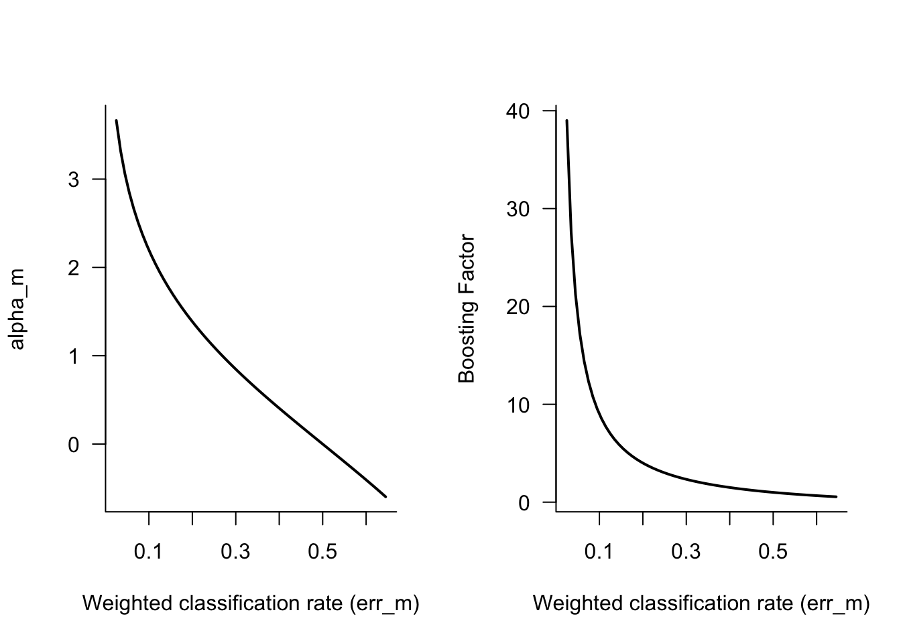
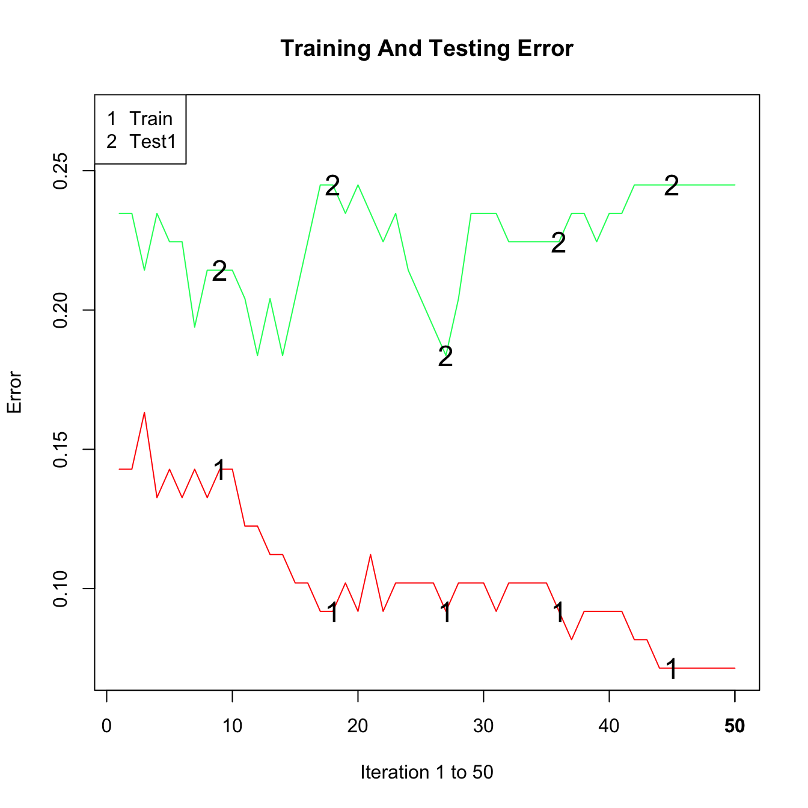
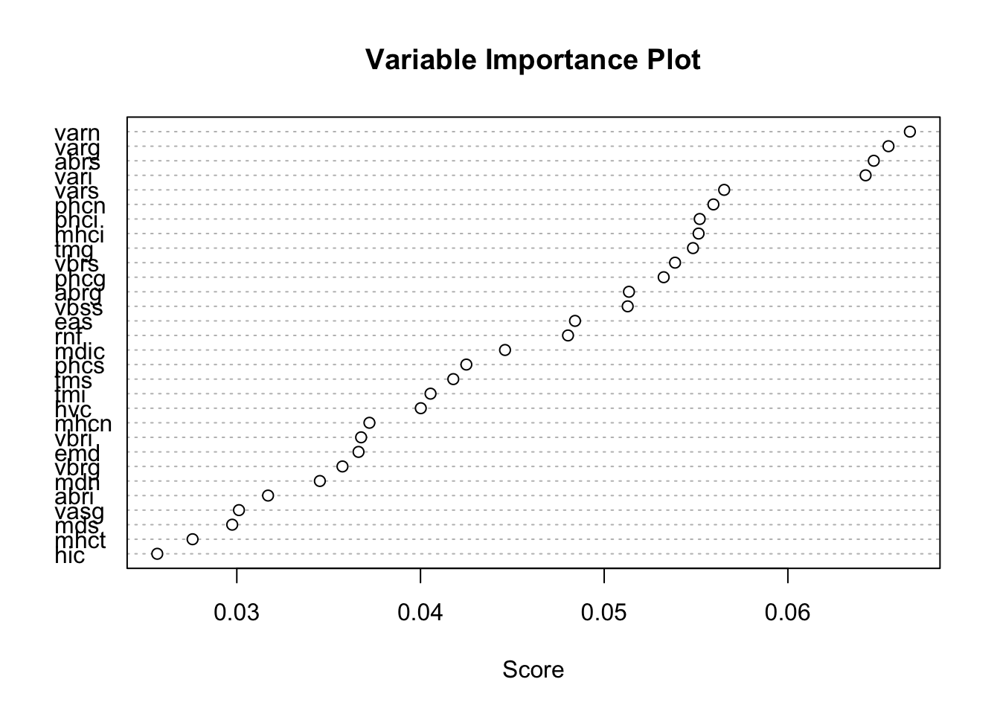
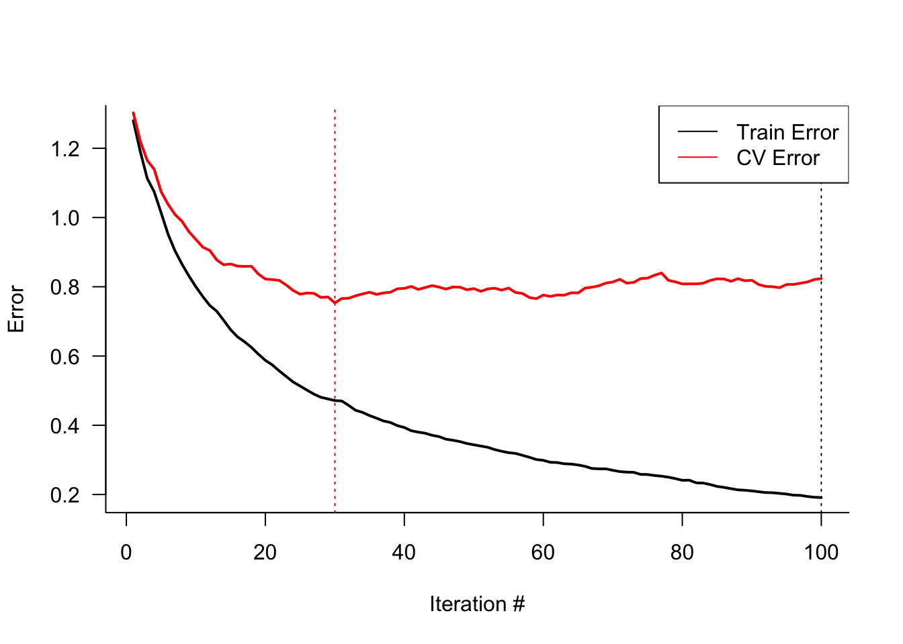
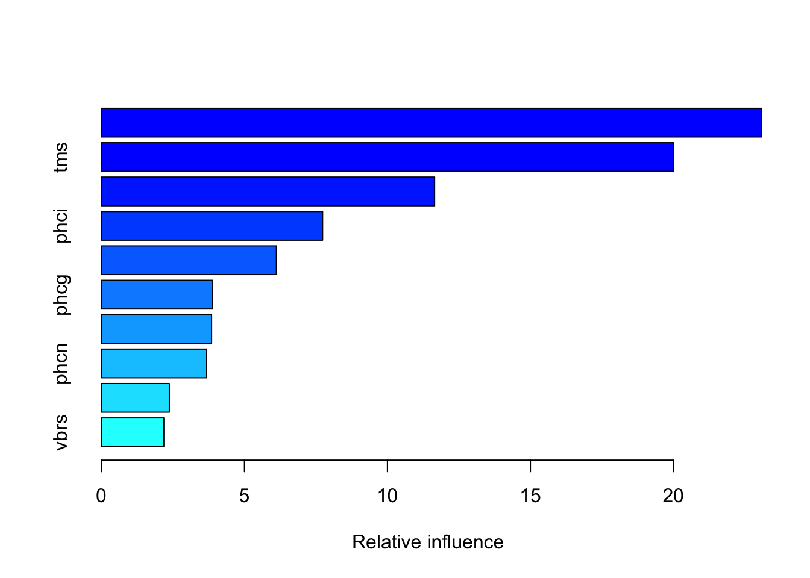

20 Boosting
20.1 Introduction
Bagging relies on bootstrapping a low-bias, high-variance estimator to reduce the variability through averaging. The improvement over the non-ensemble estimator stems from the variance-reducing effect of averaging. When bagging trees, each tree is grown independently of the other trees on its version of the sample data.
Boosting is an ensemble method in which improvements are made sequentially, for example, by adjusting weights and focusing subsequent estimators on cases where previous estimators performed poorly. The final prediction or classification is based on all estimators in the sequence. Unlike bagging, the estimators are derived from the same data using modifications such as weighting.
Although boosting is a generic method, in applications it is mostly based on trees. Initially proposed for classification problems, boosting can be applied in the regression setting. James et al. (2021, 347) describe boosting using trees with the following pseudo-algorithm:
Initially, set \(\widehat{f}(\textbf{x}_i) = 0\). Calculate the initial residuals \(r_i = y_i - \widehat{f}(\textbf{x}_i) = y_i\).
Perform the following updates \(b=1, \cdots, B\) times
- Fit a tree \(\widehat{f}^b(\textbf{x})\) with \(d+1\) leaves to the residuals \(r_i\)
- Update \(\widehat{f}(\textbf{x}) \leftarrow \widehat{f}(\textbf{x}) + \lambda \widehat{f}^b(\textbf{x})\)
- Update the residuals \(r_i \leftarrow r_i - \lambda\widehat{f}^b(\textbf{x}_i)\)
Produce the final prediction/classification from the ensemble \[ \widehat{f}(\textbf{x}) = \sum_{b=1}^B \lambda\widehat{f}^b(\textbf{x}) \] The parameter \(\lambda\) is a shrinkage parameter, it determines the learning rate. Boosting produces learners that learn slowly. Rather than a carefully crafted regression model that is fit once to the data, boosting approaches a good prediction or classification by repeatedly making small adjustments. The initial fit in the pseudo-algorithm is to the data \(y_i\) as the classifier is set initially to \(\widehat{f}(\textbf{x}) = 0\). However, we are not accepting the initial predictions in full, shrinking them instead by the factor \(\lambda\). With the initial fit, the residuals can be updated and the data to train the next tree is \([\textbf{x}, r]\). Again, we add only a portion of that tree to the current estimator.
It is often believed that boosting is used only with weak learners, those classifiers barely better than a random guess. That is not necessarily so. Hastie, Tibshirani, and Friedman (2001) recommend boosting trees with four to eight nodes, while weak learners would be “stumps”, trees with a single split (two nodes). A stump is a low-variance, high-bias learner and would not perform well with bagging. The fact that boosting can perform well for weak learners and for strong learners suggests that the procedure is good at reducing variability and at reducing bias (J. Friedman, Hastie, and Tibshirani 2000).
However, one can also find examples where boosting stumps does not outperform a single, carefully constructed, deep tree. The choice of the base learner can be important in boosting applications. Sutton (2005) provides a hint on how to decide on the base tree: when input effects are additive, stumps work well. If interactions between the inputs are expected, increase the depth of the base tree. In the same vein, James et al. (2021, 347) recommend to set the number of splits equal to the largest expected interaction. For example, if three-way interactions exist between the inputs, set the number of splits to three.
An often mentioned benefit of boosting is protection against overfitting. Some care seems warranted in making the claim that boosted models do not overfit. As Andreas Buja points out in the discussion of the paper by J. Friedman, Hastie, and Tibshirani (2000), the
500 or so stumps and twigs that I have seen fitted in a single boosting fit would come crashing down if they were fitted jointly. Therefore, the essence of the protection against overfit is in the suboptimality of the fitting method.
In other words, using stumps in boosting allows one to start small and get better. Boosting a strong learner does not provide the same protection against overfitting. Buja also concludes that this focus on using many suboptimal estimators explains why boosting was invented in computer science and machine learning rather than in statistics. The idea of taking suboptimal steps is foreign to statisticians who would rather find the grand optimal estimator.
20.2 Adaptive Boosting (AdaBoost)
Prior to the discovery of gradient boosting, adaptive boosting was the most popular boosting algorithm. The basic algorithm is called AdaBoost.M1, also known as Discrete AdaBoost. J. Friedman, Hastie, and Tibshirani (2000) describe it with the following algorithm:
Discrete AdaBoost
- The data comprise \([\textbf{x}_1,y_1], \cdots, [\textbf{x}_n,y_n]\), where \(y \in \{-1,1\}\) and the goal is to classify \(Y\) based on the inputs \(X_1,\cdots,X_p\).
- Create a weight vector \(\textbf{w}= [1/n, \cdots, 1/n]\)
- Repeat the following steps for \(m=1,\cdots, M\):
- Fit the weighted classifier \(f_m(\textbf{x}) \in \{-1,1\}\) using \(\textbf{w}\) as weights
- Compute the weighted misclassification rate \[ \text{err}_m = \frac{\sum_{i=1}^n w_i I(y_i \ne f_m(\textbf{x}_i))}{\sum_{i=1}^n w_i} \] and \(\alpha_m = \log\{(1-\text{err}_m)/\text{err}_m\}\)
- Recompute the weights \(w_i \leftarrow w_i\exp\{\alpha_m 1(y_i \ne f_m(\textbf{x}_i)\}\)
- The final classifier is \[ f(\textbf{x}) = \text{sign}\left( \sum_{m=1}^m\alpha_m f_m(\textbf{x}) \right) \]
The target variable for binary classification is coded \(\{-1,1\}\) instead of \(\{0,1\}\). Consequently the classifier \(f(\textbf{x})\) assigns categories based on its sign: if \(f(\textbf{x}) < 0\), predict the event coded as \(y = -1\); if \(f(\textbf{x}) > 0\), predict the event coded as \(y = 1\).
The core of the algorithm is 2., a sequence of \(M\) weighted classifiers \(f_1(\textbf{x}), \cdots, f_M(\textbf{x})\) fit to the training data. The key is the weight vector \(\textbf{w}= [w_1,\cdots,w_n]^\prime\), re-calculated after each step. First, let’s evaluate the recomputed weights in 2(c): \[ w_i \leftarrow w_i\exp\{\alpha_m 1(y_i \ne f_m(\textbf{x}_i)\} \]
If observation \(i\) is correctly classified by the \(m\)th classifier, then \(y_i = f_m(\textbf{x}_i)\) and the weight does not change. On the other hand, if observation \(i\) is not correctly classified, then its weight is boosted by the amount \(\exp\{\alpha_m\}\). \(\alpha_m\) in turn depends on the (weighted) misclassification rate of the classifier \(f_m(\textbf{x})\).
If \(\text{err}_m = 0.5\), the classifier \(f_m(\textbf{x})\) is as good as a random guess and \(\alpha_m = 0\). The weights of the misclassified observations will not change. If the classification error is lower—\(f_m(\textbf{x})\) performs better than a random guess—, \(\alpha_m > 1\) and the weights of the misclassified observations receive a positive boost (Figure 20.1).
Increasing the weights of the misclassified observations for the next classifier is often translated into “adaptive boosting focuses on the observations we previously got wrong.” As Leo Breiman points out in the discussion of J. Friedman, Hastie, and Tibshirani (2000), the interpretation that AdaBoost focuses more heavily on misclassified observations for the next iteration and “ignores” the correctly classified observations, is not correct. AdaBoost puts more emphasis on points recently misclassified, because it is trying to get them right next time around—the algorithm is not a divider of points into correctly and incorrectly classified ones, it is an equalizer.
Real AdaBoost
A variation of the discrete algorithm, called Real AdaBoost is presented in J. Friedman, Hastie, and Tibshirani (2000). The base learner does not return the sign of the target but an estimate of the probability that \(Y=1\). Steps 2a–2c of the Discrete AdaBoost algorithm above are modified as follows:
- Repeat the following steps for \(m=1,\cdots, M\):
- Fit the weighted classifier \(f_m(\textbf{x}) \in \{-1,1\}\) using \(\textbf{w}\) as weights to obtain a class probability estomate \(p_m(\textbf{x}) = \widehat{\Pr}(Y=1|\textbf{x})\).
- Set \[ f_m(\textbf{x}) = \frac{1}{2} \log\left\{\frac{p_m(\textbf{x})}{1-p_m(\textbf{x})}\right\} \]
- Recompute the weights \(w_i \leftarrow w_i\exp\{-y_i f_m(\textbf{x}_i)\}\) and renormalize the weigths so that $w_i =1 $.
This formulation is helpful to show that adaptive boosting is equivalent to fitting an additive model in a forward-stagewise manner, where the loss function is exponential loss (rather than squared error or misclassification rate): \[ L(y,f(\textbf{x})) = \exp\{-y f(\textbf{x})\} \] You recognize this loss in the computation of the weights in step 2c. This formulation is helpful to statisticians in expressing boosting in terms of a well-understood modeling procedure. It is also helpful to see that AdaBoost is not optimizing the misclassification rate. The exponential loss function can continue to decrease when the classification error in the training set reaches zero and the classification rate in the test data continues to decrease.
AdaBoost in R
Adaptive boosting with the Discrete or Real AdaBoost algorithm as described above and in J. Friedman, Hastie, and Tibshirani (2000) is implemented in the ada::ada function in R. ada uses rpart to fit decision trees \(f_m(\textbf{x})\) during boosting, see Chapter 17. By default, ada implements Discrete AdaBoost with \(M=50\) boosting iterations (\(M=50\) trees) and can estimate the test error based on out-of-bag sampling and a separate test data set.
Example: Glaucoma Database
The data for this example is the Glaucoma Database in the TH.data package. The data frame has 196 observations with variables derived from a confocal laser scanning image of the optic nerve head. There are 62 input variables and a binary target variable that classifies eyes as normal or glaucatomous. Most of the variables describe either the area or volume in certain parts of the papilla and are measured in four sectors (temporal, superior, nasal and inferior) as well as for the whole papilla (global).
The following statements read the data and split it into training and test sets of equal size.
library("TH.data")
data( "GlaucomaM", package="TH.data")
set.seed(5333)
trainindex <- sample(nrow(GlaucomaM),nrow(GlaucomaM)/2)
glauc_train <- GlaucomaM[trainindex,]
glauc_test <- GlaucomaM[-trainindex,]The following statements fit a binary classification model for Class by discrete adaptive boosting with \(M=50\) iterations. The rpart.control object requests that all splits are attempted (cp=-1), but trees are not split more than once (maxdepth=1). The xval=0 option turns off cross-validation inside of rpart. In other words, we are fitting stumps.
library(ada)
adab <- ada(Class ~ .,
data=glauc_train,
control=rpart.control(maxdepth=1, cp=-1, minsplit=0, xval=0)
)
adabCall:
ada(Class ~ ., data = glauc_train, control = rpart.control(maxdepth = 1,
cp = -1, minsplit = 0, xval = 0))
Loss: exponential Method: discrete Iteration: 50
Final Confusion Matrix for Data:
Final Prediction
True value glaucoma normal
glaucoma 52 3
normal 4 39
Train Error: 0.071
Out-Of-Bag Error: 0.102 iteration= 36
Additional Estimates of number of iterations:
train.err1 train.kap1
44 44 The final confusion matrix for the training data after 50 boosting iterations shows 9 misclassifications for a training error of 0.071. Based on the out-of-bag sample, the error is slightly larger, 0.102.
The trees fit during the iterations can be found on the model structure of the return object. Here are \(f_1(\textbf{x}), f_2(\textbf{x})\), and \(f_3(\textbf{x})\), confirming that boosting is based on stumps.
adab$model$trees[1:3][[1]]
n= 49
node), split, n, loss, yval, (yprob)
* denotes terminal node
1) root 49 0.23469390 1 (0.43900415 0.56099585)
2) vari< 0.0805 21 0.01020408 -1 (0.94650206 0.05349794) *
3) vari>=0.0805 28 0.03061224 1 (0.09596662 0.90403338) *
[[2]]
n= 49
node), split, n, loss, yval, (yprob)
* denotes terminal node
1) root 49 0.19248630 -1 (0.71330537 0.28669463)
2) vari< 0.073 27 0.01187359 -1 (0.97165821 0.02834179) *
3) vari>=0.073 22 0.04554660 1 (0.28457638 0.71542362) *
[[3]]
n= 49
node), split, n, loss, yval, (yprob)
* denotes terminal node
1) root 49 0.2382598 1 (0.4599978 0.5400022)
2) varg< 0.2065 17 0.0000000 -1 (1.0000000 0.0000000) *
3) varg>=0.2065 32 0.0743646 1 (0.2100319 0.7899681) *The first and second trees are split on variable vari, the third tree is split on variable varg. This reinforces how stumps lead to an additive model where the contributions of inputs are ensembled in a weighted combination. Also, a variable can be reused at a later point of the boosting iterations.
The confusion matrix for the training data set looks promising, but when applied to the test data set we see that the accuracy is only 75.5%, the model has low specificity, classifying too many healthy eyes as glaucatomous.
library(caret)
adab.pred <- predict(adab,newdata=glauc_test)
adab.cm <- confusionMatrix(adab.pred,glauc_test$Class)
adab.cmConfusion Matrix and Statistics
Reference
Prediction glaucoma normal
glaucoma 40 21
normal 3 34
Accuracy : 0.7551
95% CI : (0.6579, 0.8364)
No Information Rate : 0.5612
P-Value [Acc > NIR] : 5.38e-05
Kappa : 0.5245
Mcnemar's Test P-Value : 0.0005202
Sensitivity : 0.9302
Specificity : 0.6182
Pos Pred Value : 0.6557
Neg Pred Value : 0.9189
Prevalence : 0.4388
Detection Rate : 0.4082
Detection Prevalence : 0.6224
Balanced Accuracy : 0.7742
'Positive' Class : glaucoma
To see the evolution of training and test error over the boosting iterations, we are adding a test data set with the addtest function and requesting a plot.
adab <- addtest(adab,
glauc_test[,-ncol(glauc_test)],
glauc_test[, "Class"])
plot(adab, test=TRUE)
While the training error decreased steadily, the test error does not improve after about 15 iterations.
The ada::varplot function computes and displays a variable importance plot based on the boosting iterations. The “importance” of a variable is measured by how frequently it is selected in boosting (Figure 20.2). The majority of the stumps are based on varn, varg, abrs, and vari. Three of these variables are related to the volume of the optic nerve (nasal, inferior, and global), suggesting that the volume of the optic nerve is an important driver of glaucoma classification.
varplot(adab)

20.3 Gradient Boosting Machines
The Algorithm
The adaptive boosting algorithm can be expressed as a sequence of forward-stagewise additive models that minimize an exponential loss function. This idea can be generalized to the following idea: is there a sequence of weak learning models that can be fit in order to minimize some overall objective (loss) function?
This is the idea behind gradient boosting. Instead of changing the weights in the data between boosting iterations, models are sequentially trained in a greedy way to find a solution to an optimization problem by following the gradient of the objective function. Gradient boosting is often described in terms of fitting models to pseudo residuals, so let us first make the connection between gradients and residuals.
Suppose we wish to minimize the objective (loss) function \[ \sum_{i=1}^n L(y_i, f(\textbf{x}_i)) \] One technique is to start from a current solution \(f_0(\textbf{x}_i)\) and to step into the direction of the negative gradient \[ -\sum_{i=1}^n \frac{\partial L(y_i,f(\textbf{x}_i))}{\partial f(\textbf{x}_i)} \tag{20.1}\]
This is the basic idea behind, for example, finding least-squares estimators in nonlinear regression models (see Chapter 9).
The terms being summed in Equation 20.1 are called pseudo residuals since they measure the changed in loss at \(f(\textbf{x}_i)\). If we deal with squared error loss, \(L(y_i,f(\textbf{x}_i)) = (y_i - f(\textbf{x}_i))^2\), the pseudo residual is a scaled form of an actual residual, \[ \frac{\partial L(y_i,f(\textbf{x}_i))}{\partial f(\textbf{x}_i)} = -2(y_i - f(\textbf{x}_i)) \]
In adaptive boosting models are trained on sets of data with different weighting. In gradient boosting, models are trained on the pseudo residuals from previous iterations. The principle algorithm is as follows:
- The data consist of \([y_1,\textbf{x}_1],\cdots, [y_n,\textbf{x}_n]\). A loss function \(L(y,f(\textbf{x}))\) is chosen.
- Initialize the model with a constant value by solving \[ f_0(\textbf{x}) = \mathop{\mathrm{arg\,min}}_{\gamma} \sum_{i=1}^n L(y_i,\gamma) \]
- Repeat the following steps for \(m=1,\cdots, M\):
- Compute the pseudo residuals \[ r_{im} = - \frac{\partial L(y_i,f(\textbf{x}_i))}{\partial f(\textbf{x}_i)} \] where the gradient is evaluated at \(f_{m-1}(\textbf{x})\)
- Train a base learner \(b_m(\textbf{x})\) to the data \([r_{1m},\textbf{x}_1],\cdots,[r_{nm},\textbf{x}_n]\)
- Estimate the step size for the \(m\)th model by finding \(\delta_m\) such that \[ \delta_m = \mathop{\mathrm{arg\,min}}_{\delta} \sum_{i=1}^n L(y_i, f_{m-1}(\textbf{x}_i) + \delta b_m(\textbf{x}_i)) \]
- Update the model for the next iteration: \(f_m(\textbf{x}) = f_{m-1}(\textbf{x}) + \delta_m b_m(\textbf{x})\)
- The final predictor/classifier is \(F_M(\textbf{x})\)
An advantage of gradient boosting over adaptive boosting is to provide a more general framework that accommodates different models and loss functions.
It is worthwhile to draw parallels and distinctions of this algorithm and general nonlinear function optimization. In the latter, we are working with a known functional form of the relationship between \(y\) and \(\textbf{x}\) and we reach an iterative solution by starting from initial values of the parameters. The gradient is computed exactly on each pass through the data and the best step size \(\delta\) is determined by a line search.
In gradient boosting we do not calculate the overall gradient, instead we train a model to predict the gradient in step 2b. Because of the structure of the estimation problem, the step size \(\delta\) can be determined through a second optimization in step 2d.
Gradient Boosting in R
You can fit gradient boosting machines with the gbm library in R. The package is flexible and includes gradient boosting for linear models, Logistic, Poisson, Cox proportional hazards, Multinomial, and AdaBoost models and supports a variety of loss functions..
To build a gradient boosting machine with gbm, you select the following:
the loss function, it is implied by the
distributionargumentthe number of trees,
n.trees, the default is 100the depth of each tree,
interaction.depth. The default is 1 and corresponds to an additive model based on stumps.interaction.depth=2is a model with 2-way interactionsthe learning rate parameter.,
shrinkage, the default is 0.1. The learning rate determines the step size for the gradient.the subsampling rate.
bag.fraction, the default is 0.5.
So rather than determining the step size (learning rate) through a separate optimization, it chooses a fixed rate as specified by the shrinkage parameter. The subsampling comes into play after computing the pseudo residuals. The tree is fit on only a subsample of the training data. J. H. Friedman (2002) foumnd that changing gradient descent to stochastic gradient descent improves the performance of the boosting algorithm.
Example: Glaucoma Database (Cont’d)
The response variable is recoded to a (0,1) response since gbm expects a (0,1) valued variable for binary data (distribution="bernoulli"). Setting cv.folds=5 requests a 5-fold cross-validation to compute the error of the model.
library(gbm)
Glaucoma = ifelse(GlaucomaM$Class=="glaucoma",1,0)
Glauc_train_Y <- Glaucoma[ trainindex]
Glauc_test_Y <- Glaucoma[-trainindex]
set.seed(4876)
gbm_fit <- gbm(Glauc_train_Y ~ . - Class,
data=glauc_train,
distribution="bernoulli",
cv.folds=5)Figure 20.3 displays the training and cross-validation errors of the gradient boosting machine. The training error continues to decrease with the boosting iterations, while the cross-validation error achieves a minimum after 30 iterations. The cross-validation error stays pretty flat afterwards, suggesting that the model does not overfit for larger number of boosting iterations.

The summary function of the gbm object computes the relative variable importance for the inputs as judged by the reduction in the loss function. Only the ten most important variables are shown here. Inputs vari, tms, and vars dominate the analysis.
ss <- summary(gbm_fit, cBars=10)
ss[1:10,] var rel.inf
vari vari 23.077395
tms tms 20.008711
vars vars 11.650118
phci phci 7.733716
hic hic 6.117857
phcg phcg 3.887402
mhci mhci 3.851130
phcn phcn 3.675900
vasi vasi 2.372715
vbrs vbrs 2.180921The following statements compute the confusion matrix for the test data set. Since gbm with distribution="bernoulli" essentially is a boosted logistic regression model, the predictions on the scale of the response are predicted probabilities that are converted into predicted categories using the Bayes classifier.
n.trees=100 requests that predictions are based on all 100 trees. Without this argument the predictions would be based on the first 30 trees, the value where the cross-validation error took on a minimum.
gbm_fit.pred <- predict(gbm_fit,newdata=glauc_test,
n.trees=100,
type="response")
gbm_fit.predcats <- ifelse(gbm_fit.pred < 0.5, 0 , 1)
gbm_fit.cm <- confusionMatrix(as.factor(gbm_fit.predcats),
as.factor(Glauc_test_Y),
positive="1")
gbm_fit.cmConfusion Matrix and Statistics
Reference
Prediction 0 1
0 34 3
1 21 40
Accuracy : 0.7551
95% CI : (0.6579, 0.8364)
No Information Rate : 0.5612
P-Value [Acc > NIR] : 5.38e-05
Kappa : 0.5245
Mcnemar's Test P-Value : 0.0005202
Sensitivity : 0.9302
Specificity : 0.6182
Pos Pred Value : 0.6557
Neg Pred Value : 0.9189
Prevalence : 0.4388
Detection Rate : 0.4082
Detection Prevalence : 0.6224
Balanced Accuracy : 0.7742
'Positive' Class : 1
Like in the adaptive boosting model in the previous section, the gradient boosting model has a fairly low accuracy and predicts too many normal eyes as glaucatomous (low specificity).
20.4 Extreme Gradient Boosting (XGboost)
Extreme gradient boosting is not a different type of boosting, it is a particular implementation of gradient boosting that became popular in machine learning competitions because of its excellent performance. XGBoost is an algorithm.
The aspects improved by XGBoost over gradient boosting machines are as follows:
Parallel execution. Although boosting is fundamentally a sequential operation, XGBoost takes advantage of opportunities to parallelize training, for example during tree splitting.
Regularization. Gradient boosting does not include regularization to guard against overfitting. XGBoost does include several regularization approaches.
XGBoost includes a method for handling missing values, known as sparsity-aware split finding.
Built-in cross-validation
Because of these features, XGBoost has become one of the most frequently used algorithms for regression and classification in data science and machine learning. For many data scientists, XGBoost has become the method of choice.
XGBoost is available in R in the xgboost package. Before you can train an XGBoost model the data need to be arranged in a special form, a xgb.DMatrix object.
Example: Glaucoma Database (Cont’d)
The following statements apply XGBoost to the Glaucoma data set after converting the training and test data frames into xgb.DMatrix objects.
early_stopping_rounds=3 requests that training with a validation data set stops if the performance of the model does not improve for 3 boosting iterations. The watchlist= argument specifies a list of xgb.DMatrix data sets xgboost uses to monitor model performance. Test and validation data sets are specified here.
By default, xgboost fits trees up to a depth of 6, we are changing this for comparison with adaptive and gradient boosting in the previous sections.
library(xgboost)
glauc_train$Glaucoma <- Glauc_train_Y
glauc_test$Glaucoma <- Glauc_test_Y
xgdata <- xgb.DMatrix(data=as.matrix(glauc_train[,1:62]),
label=glauc_train$Glaucoma)
xgtest <- xgb.DMatrix(data=as.matrix(glauc_test[,1:62]),
label=glauc_test$Glaucoma)
set.seed(765)
xgb_fit <- xgb.train(data=xgdata,
watchlist=list(test=xgtest),
max.depth=2, # maximum depth of a tree
eta=0.1, #learning rate, 0 < eta < 1
early_stopping_rounds=5,
subsample=0.5,
objective="binary:logistic",
nrounds=100 # max number of boosting iterations
)[1] test-logloss:0.672381
Will train until test_logloss hasn't improved in 5 rounds.
[2] test-logloss:0.660826
[3] test-logloss:0.636727
[4] test-logloss:0.621548
[5] test-logloss:0.604597
[6] test-logloss:0.595914
[7] test-logloss:0.590066
[8] test-logloss:0.575405
[9] test-logloss:0.568329
[10] test-logloss:0.557616
[11] test-logloss:0.549551
[12] test-logloss:0.553775
[13] test-logloss:0.550009
[14] test-logloss:0.551230
[15] test-logloss:0.546562
[16] test-logloss:0.545014
[17] test-logloss:0.545235
[18] test-logloss:0.530310
[19] test-logloss:0.537485
[20] test-logloss:0.530989
[21] test-logloss:0.533402
[22] test-logloss:0.541920
[23] test-logloss:0.542144
Stopping. Best iteration:
[18] test-logloss:0.530310xgb_fit.pred <- predict(xgb_fit,newdata=xgtest,type="response")
xgb_fit.predcats <- ifelse(xgb_fit.pred < 0.5, 0 , 1)
xgb_fit.cm <- confusionMatrix(as.factor(xgb_fit.predcats),
as.factor(Glauc_test_Y),
positive="1")
xgb_fit.cmConfusion Matrix and Statistics
Reference
Prediction 0 1
0 34 4
1 21 39
Accuracy : 0.7449
95% CI : (0.6469, 0.8276)
No Information Rate : 0.5612
P-Value [Acc > NIR] : 0.000129
Kappa : 0.5034
Mcnemar's Test P-Value : 0.001374
Sensitivity : 0.9070
Specificity : 0.6182
Pos Pred Value : 0.6500
Neg Pred Value : 0.8947
Prevalence : 0.4388
Detection Rate : 0.3980
Detection Prevalence : 0.6122
Balanced Accuracy : 0.7626
'Positive' Class : 1